Books
Palgrave Macmillan Series on Agricultural Economics and Food Policy
Seeking book proposals on any topic in agricultural economics and food policy, but perhaps especially on:
- Agriculural policy and obesity
- Biofuels
- Climate chane and agriculture
- Consumer acceptance of GM foods
- Fair trade impacts on smallholders
- Financial innovation and ag development
- Food prive volatility
- Food security measurement
- ICT in agriculture
- Immgration and farm labor policies
- Inellectual propert and agricultur R&D
- Land markets in a high food price world
- Multipurpose rural landscapes
- Nonpoint Source Agricultural Pollution
- Trade liberalization and food security
- Water management for agriculture
Global Food Policy Report 2025: Food Policy – Lessons and Priorities for a Changing World
Series: IFPRI Global Food Policy Reports
Marking IFPRI’s 50th anniversary, this edition examines how food policy research can inform solutions to global food system challenges.
Published: 28 May 2025
Authors: Johan Swinnen and Christopher B. Barrett (Eds.)
Summary: Over the past 50 years, the world’s food systems have evolved tremendously amid major economic, environmental, and social changes. Throughout this period, policy research has played a critical role in providing evidence and analysis to inform decision-making that supports agricultural growth, better livelihoods, and improved food security, nutrition, and well-being for all.
As a special edition marking the Institute’s 50th anniversary, the 2025 Global Food Policy Report examines the evolution and impact of food policy research and assesses how it can better equip policymakers to meet future challenges and opportunities. The report’s thematic and regional chapters, written by leading IFPRI researchers and colleagues, explore the broad range of issues and showcase research related to food systems, from tenure and agriculture extension to social protection, gender, and nutrition to conflict, political economy, and agricultural innovation, and more. As we approach 2050, policy research and analysis will be essential to help end poverty and malnutrition by building sustainable healthy food systems.
Escaping Poverty Traps and Unlocking Prosperity in the Face of Climate Risk
Series: Elements in Development Economics
Lessons from Index-Based Livestock Insurance
Expected online publication date: 27 June 2024
Authors: Nathaniel D. Jensen, Francesco P. Fava, Andrew G. Mude, Christopher B. Barrett, Brenda Wandera-Gache, Anton Vrieling, Masresha Taye, Kazushi Takahashi, Felix Lung, Munenobu Ikegami, Polly Ericksen, Philemon Chelanga, Sommarat Chantarat, Michael Carter, Hassan Bashir, and Rupsha Banerjee
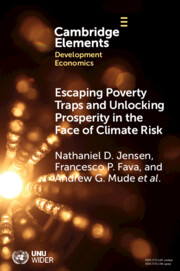
Summary: This Element outlines the origins and evolution of an international award-winning development intervention, index-based livestock insurance (IBLI), which scaled from a small pilot project in Kenya to a design that underpins drought risk management products and policies across Africa. General insights are provided on i) the economics of poverty, risk management, and drylands development; ii) the evolving use of modern remote sensing and data science tools in development; iii) the science of scaling; and iv) the value and challenges of integrating research with operational implementation to tackle development and humanitarian challenges in some of the world's poorest regions. This title is also available as Open Access on Cambridge Core.
Introducing the Agrifood Systems Technologies and Innovations Outlook (ATIO)
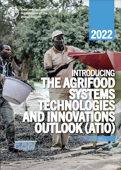
October 2022
Agrifood system transformation to achieve the Sustainable Development Goals requires increased attention to developing, adapting and diffusing impactful science, technology and innovation (STI). Current levels and patterns of STI uptake are inadequate to facilitate needed agrifood system transformations, especially in today's low- and middle-income countries. Moreover, the descriptive and evaluative evidence on current and emergent STI is also insufficiently well understood to permit intentional management of STI to meet the multiple objectives of future agrifood systems: efficient, inclusive, resilient and sustainable. This report introduces the vision, rationale, scope and methods for new knowledge products FAO will launch as part of a new Agrifood System Technologies and Innovations Outlook (ATIO). ATIO's objective is to curate existing information on the current, measurable state of STI and upcoming changes, as well as their transformative potential, to inform evidence-based policy dialogue and decisions, including on investments.
Handbook of Agricultural Economics, Volume 6
Co-Editors: Christopher B. Barrett, David R. Just

Volume 6: June 2022
Handbook of Agricultural Economics, Volume Six highlights new advances in the field, with this new release exploring comprehensive chapters written by an international board of authors who discuss topics such as The Economics of Food Loss and Waste, Empowering Communities Using an Integrated Design of Food Networks, Concentration in Food and Agricultural Markets, Agriculture and trade, Producers, Consumers, and Value Chains in Developing Countries, The Multiple Burdens of Malnutrition: Dietary Transition and Food System Transformation in Economic Development, Psychophysiological Measures and Consumer Food Choice, and The Economics of Health and Nutrition Related Food Policies: The Effects on the Public Health and Malnutrition.
Socio-technical Innovation Bundles for Agri-food Systems Transformation
Co-Editors: Christopher B. Barrett, Tim Benton, Jessica Fanzo, Mario Herrero, Rebecca Nelson, Elizabeth Bageant, Edward Buckler, Karen Cooper, Isabella Culotta, Shenggen Fan, Rikin Gandhi, Steven James, Mark Kahn, Laté Lawson-Lartego, Jiali Liu, Quinn Marshall, Daniel Mason-D’Croz, Alexander Mathys, Cynthia Mathys, Veronica Mazariegos-Anastassiou, Alesha (Black) Miller, Kamakhya Mishra, Andrew Mude, Jianbo Shen, Lindiwe Majele Sibanda, Claire Song, Roy Steiner, Philip Thornton, and Stephen Wood

2022
This open access book is the result of an expert panel convened by the Cornell Atkinson Center for Sustainability and Nature Sustainability. It was originally published on the Nature web site in December 2020. The panel tackled the seventeen UN Sustainable Development Goals (SDGs) for 2030 head-on, with respect to the global systems that produce and distribute food. The panel’s rigorous synthesis and analysis of existing research leads compellingly to multiple actionable recommendations that, if adopted, would simultaneously lead to healthy and nutritious diets, equitable and inclusive value chains, resilience to shocks and stressors, and climate and environmental sustainability. Supporting articles and materials are available on the Atkinson Center website.
Handbook of Agricultural Economics, Volume 5
Co-Editors: Christopher B. Barrett, David R. Just

Volume 5: December 1, 2021
Handbook of Agricultural Economics, Volume Five highlights new advances in the field, with this new release exploring comprehensive chapters written by an international board of authors who discuss topics such as The Economics of Agricultural Innovation, Climate, food and agriculture, Agricultural Labor Markets: Immigration Policy, Minimum Wages, Etc., Risk Management in Agricultural Production, Animal Health and Livestock Disease, Behavioral and Experimental Economics to Inform Agri-Environmental Programs and Policies, Big Data, Machine Learning Methods for Agricultural and Applied Economists, Agricultural data collection to minimize measurement error and maximize coverage, Gender, agriculture and nutrition, Social Networks Analysis In Agricultural Economics, and more.
Overseas Research, A Practical Guide (Routledge 2020)
Authors: Christopher B. Barrett, Jeffrey Cason, Erin C. Lentz
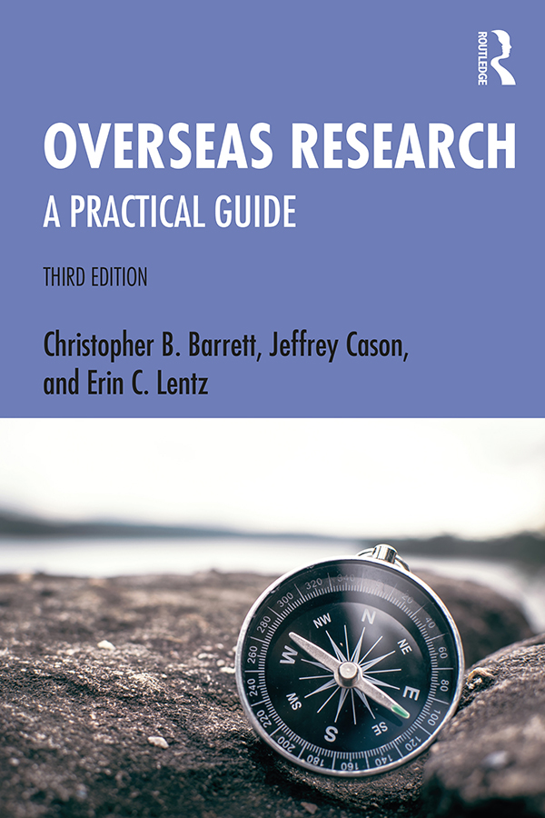
When conducting research in developing countries, an ability to negotiate a bewildering array of
cultural and logistical obstacles is essential. Overseas Research: A Practical Guide distills
essential lessons from scores of students and scholars who have collected data and done fieldwork
abroad, including how to prepare for the field, how and where to find funding for one’s fieldwork,
issues of personal safety and security, and myriad logistical and relational issues.
By encouraging researchers to think through the challenges of research before they begin it,
Overseas Research will help prepare fieldworkers for the practical, logistical, and psychological
considerations of very demanding work, help save valuable time, make the most of scarce financial
resources, and enhance the quality of the field research. This third edition contains new material
on social media, including representation of research subjects/collaborators, students’ digital
branding and image, and representing universities abroad when posting publicly. It also covers
emerging technologies such as solar panels for power in remote locations, new ways of digitally
sending and receiving money, and incorporates more perspectives of women, LGBTQ+ people, and people
of color researching abroad.
The book will be of interest to overseas fieldworkers, and also to undergraduates in subjects such
as anthropology, economics, geography, history, international studies, politics, sociology, and
development studies.
The Economics of Poverty Traps (University of Chicago Press/National Bureau of Economic Research 2019)
Editors: Christopher B. Barrett, Michael R. Carter and Jean-Paul Chavas
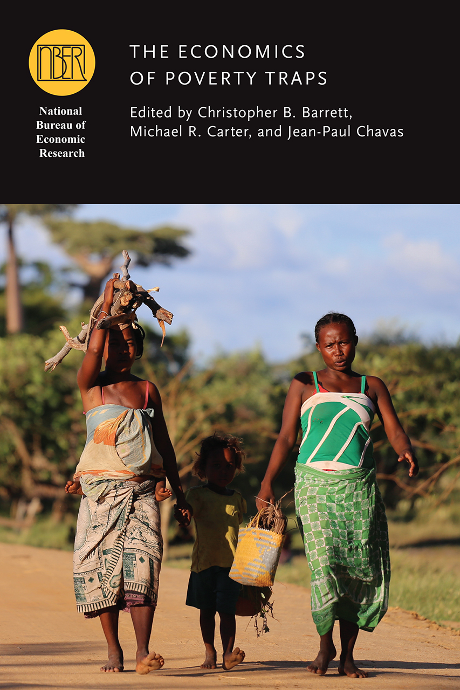
What circumstances or behaviors turn poverty into a cycle that perpetuates across generations? The
answer to this question carries especially important implications for the design and evaluation of
policies and projects intended to reduce poverty. Yet a major challenge analysts and policymakers
face in understanding poverty traps is the sheer number of mechanisms—not just financial, but also
environmental, physical, and psychological—that may contribute to the persistence of poverty all
over the world.
The research in this volume explores the hypothesis that poverty is self-reinforcing because the
equilibrium behaviors of the poor perpetuate low standards of living. Contributions explore the
dynamic, complex processes by which households accumulate assets and increase their productivity and
earnings potential, as well as the conditions under which some individuals, groups, and economies
struggle to escape poverty. Investigating the full range of phenomena that combine to generate
poverty traps—gleaned from behavioral, health, and resource economics as well as the sociology,
psychology, and environmental literatures—chapters in this volume also present new evidence that
highlights both the insights and the limits of a poverty trap lens.
The framework introduced in this volume provides a robust platform for studying well-being dynamics
in developing economies.
Food Security and Sociopolitical Stability (Oxford University Press 2013)
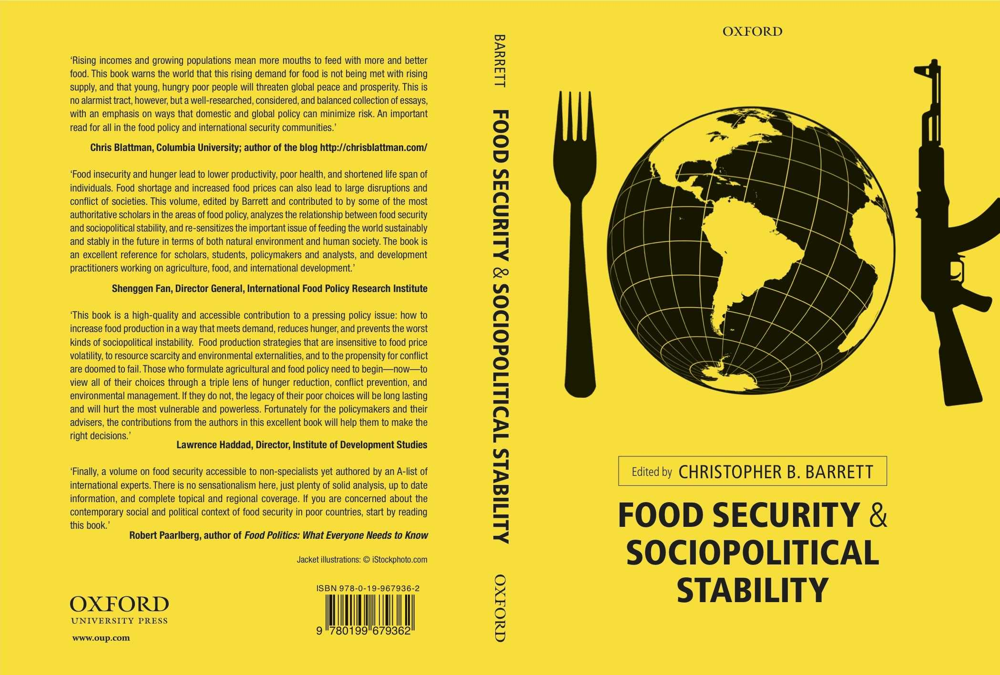
Global food price spikes in 2008 and again in 2011 coincided with a surge of political unrest in low- and middle-income countries. Angry consumers took to the streets in scores of nations. In some places, food riots turned violent, pressuring governments and in a few cases contributed to their overthrow. Foreign investors sparked a new global land rush, adding a different set of pressures. With scientists cautioning that the world has entered a new era of steadily rising food prices, perhaps aggravated by climate change, the specter of widespread food insecurity and sociopolitical instability weighs on policymakers worldwide. In the past few years, governments and philanthropic foundations began redoubling efforts to resuscitate agricultural research and technology transfer, as well as to accelerate the modernization of food value chains to deliver high quality food inexpensively, faster, and in greater volumes to urban consumers. But will these efforts suffice? This volume explores the complex relationship between food security and sociopolitical stability up to roughly 2025. Organized around a series of original essays by leading global technical experts, a key message of this volume is that actions taken in an effort to address food security stressors may have consequences for food security, stability, or both that ultimately matter far more than the direct impacts of biophysical drivers such as climate or land or water scarcity. The means by which governments, firms, and private philanthropies tackle the food security challenge of the coming decade will fundamentally shape the relationship between food security and sociopolitical stability.
Uniting on Food Assistance: The Case for Transatlantic Cooperation (Routledge 2011)
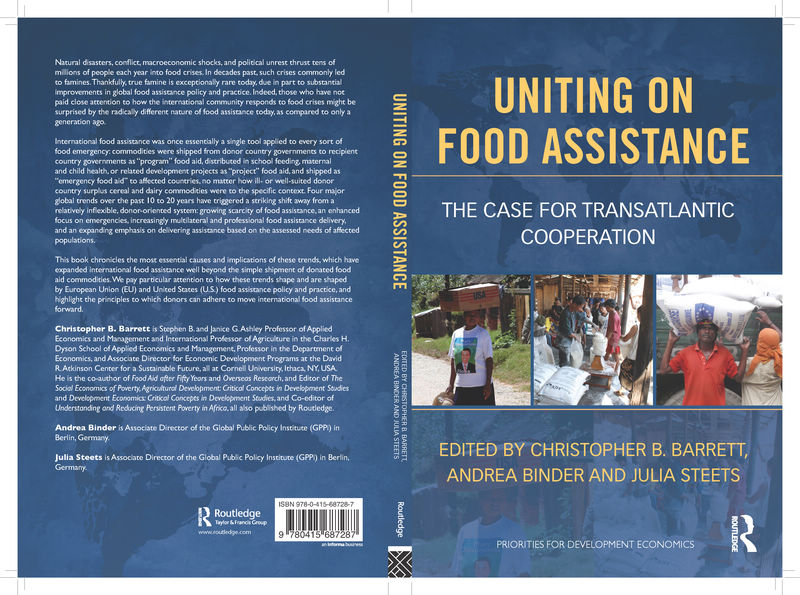
Edited with Andrea Binder and Julia Steets (Global Public Policy Institute)
With forewords by World Food Prize laureates Catherine Bertini and Per Pinstrup-Andersen
Food aid volumes have been falling over the past twenty years as donor countries increasingly find more flexible and efficient means of responding to food insecurity in low-income countries. Over the same period, demand for food assistance in response to natural and manmade disasters, as well as rising food prices, has grown substantially. Increased resource flexibility associated with reduced food aid shipments from donor countries has also created new challenges for food assistance agencies, which must now identify what sorts of responses are most appropriate in attempting to address food insecurity in a given place and time. Meanwhile, as the deleterious effects of foodborne pathogens and micronutrient deficiencies have become better understood, concerns about the nutrient mix in food assistance packages, as well as broader food safety and quality standards, have recently become prominent issues as well.
The greatest policy and programming differences have emerged between the European Union (EU) and the United States (US) and have spilled over into World Trade Organization (WTO) negotiations of a new agreement on agriculture, as well as the renegotiation of the Food Aid Convention, which began in December 2010. Differences have erupted in specific countries, for example over the use of genetically modified food aid commodities, and around technical considerations of food aid quality and safety. Divergent food aid and food assistance policies have already earned a place on the agenda for an upcoming EU-US Summit.
Yet there are strong reasons to believe the next several years could bring considerable convergence in food assistance policy among the major donors. Among other developments, widespread recent experimentation with new food assistance modalities - from the use of cash and vouchers to the procurement of food aid in developing countries - and with new food commodities, the increasing professionalization of and global cooperation around emergency warning systems, needs assessments and other operational tools, and new political leadership are prompting policy review on both sides of the Atlantic. Global food assistance is changing rapidly and the evidence on which policies are built and revised is likewise accumulating quickly. The case for transatlantic food assistance policy convergence is growing.
This volume lays out the current and future challenges of food assistance policy issues. It presents a compact review of the key food assistance policy issues that both divide and potentially unite the EU and the US, as well as of the research evidence that might inform ongoing and emerging policy debates. This book is the fruit of a transatlantic collaboration between researchers at Cornell University in the US and the Global Public Policy Institute in Germany. The project from which this volume originates, "Uniting on Food Assistance: Promoting Evidence-Based Transatlantic Dialogue and Convergence" (funded by the European Commission with co-financing support from the Brookings Institution and the German Marshall Fund, http://www.gppi.net/approach/research/uniting_on_food/) also fielded two high-level, invitation-only conferences for key food assistance policymakers at which this volume's draft chapters were vetted.
Agricultural Development: Critical Concepts in Development Studies (Routledge, 2011).
Editor - Christopher B. Barrett
Virtually all national cases of rapid, widespread progress from poverty to wealth have been causally associated with the transformation of agricultural systems. From eighteenth- and nineteenth-century Europe and North America to late twentieth-century East Asia, striking increases in agricultural productivity, improvements in food safety, and the markedly reduced costs of food distribution have dramatically bettered the quantity, quality, and variety of food available at lower prices. Around the globe, these agricultural advances have permitted unprecedented growth in incomes, life expectancy, and other quality-of-life indicators, and have decreased the risk of chronic or acute malnutrition. Furthermore, increased investment in education and non-agricultural activities in developed economies has also been enabled. Understanding the process of agricultural development is therefore central to most contemporary research and advanced study in development studies, agricultural economics, and cognate areas.
To enable users to make sense of the subject's vast literature and the continuing explosion in research output, Routledge is pleased to announce this new four-volume collection from our Critical Concepts in Development Studies series. Edited by a leading scholar in the field, Agricultural Development brings together, in one easy-to-use resource, the foundational and the very best cutting-edge scholarship in agricultural development. It provides a thorough review of the evolution of agricultural development, integrating theoretical and empirical research. With a full index, chronological table of contents, and also supplemented by an extensive introductory essay, newly written by the collection's editor, which summarizes the state of the subdiscipline and outlines its history, Agricultural Development is an essential reference work for academic researchers, policy practitioners, and students alike.
The four volumes are each approximately 400 pages in length; their organization can be seen in the Table of Contents provided.
Overseas Research II: A Practical Guide (Routledge, 2010).

with Jeff Cason (Middlebury College) on the mechanics of conducting field research in low- and middle-income countries.
Researchers in developing countries often find that the particular country in which they work presents a range of unforeseen challenges. Indeed, their ability to carry out effective scholarship is often highly dependent on these factors. The great differences between working in countries as varied as India, China, Bolivia and Kenya can often come as a shock to the system. An ability to negotiate a bewildering array of cultural and logistical obstacles is therefore essential.
Overseas Research: A Practical Guide distils essential lessons learned by scores of students and scholars who have collected data and done fieldwork abroad. The authors fill the reader in on the many crucial pieces of advice: how to prepare for the field, how and where to find funding for one's fieldwork, issues of personal safety and security, and myriad logistical and relational issues that often define one's research experience abroad. As Barrett and Cason suggest, "Fieldwork is a sequence of decisions, some about the conduct of research, some about the conduct of life." The book focuses new field researchers' attention on that productive intersection, and includes many real-life accounts from experienced professionals whose own work abroad can inform those facing the field for the first time.
Decentralization and the Social Economics of Development-Lessons from Kenya (CABI 2007)
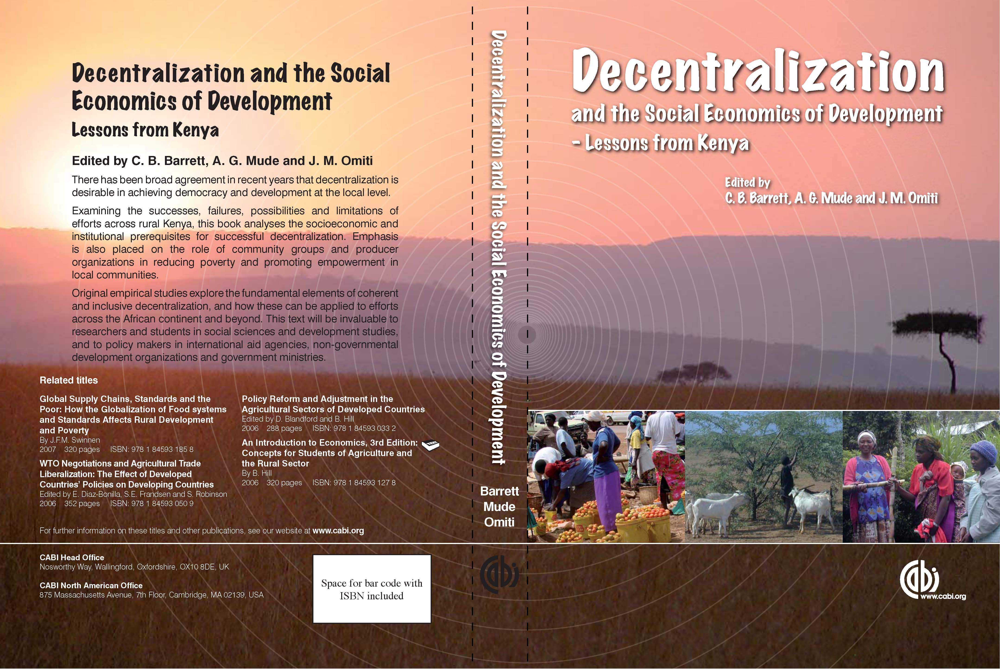
Editors - C.B. Barrett, A.G. Mude, and J.M. Omiti
There has been broad agreement in recent years that decentralization is desirable in achieving democracy and development at the local level. Examining the successes, failures, possibilities and limitations of efforts across rural Kenya, this book analyses the socioeconomic and institutional prerequisites for successful decentralization. Emphasis is also placed on the role of community groups and producer organizations in reducing poverty and promoting empowerment in local communities.
Original empirical studies explore the fundamental elements of coherent and inclusive decentralization, and how these can be applied to efforts across the African continent and beyond. This text will be invaluable to researchers and students in social sciences and development studies, and to policy makers in international aid agencies, non-governmental development organizations and government ministries.
Development Economics: Critical Concepts in Development Studies Routledge, 2007)
Editor - Christopher Barrett
With its focus on understanding how resource allocation, human behavior, institutional arrangements and private and public policy jointly influence the evolution of the human condition, development economics is arguably the most fundamental field within the discipline of economics. As the opening sentence of T.W. Schultz’s 1979 Nobel Prize lecture declared, “Most of the people in the world are poor, so if we knew the economics of being poor, we would know much of the economics that really matters.”
Development economics research ultimately explores why some countries, communities and people are rich and others poor. Rapid economic growth is, in historical terms, a recent phenomenon confined to the past three hundred years for less than one-quarter of the world’s population. Growing and seemingly persistent gaps in prosperity between rich and poor peoples – within and between countries – contributes to sociopolitical tensions, affects patterns of human pressure on the natural environment, and generally touches all facets of human existence. Understanding the process of economic development is thus central to most research in economics and the social sciences more broadly. Development economics nonetheless emerged as a distinct field of analytical, empirical and institutional research only in the past half century or so, with especially rapid progress in the past generation.
Edited by a well-established scholar who has published broadly in the field, this four volume collection provides a thorough review of the evolution and current state of the art of the field of development economics, covering development microeconomics, meso-level institutional phenomena associated with communities and markets, as well as development macroeconomics, in each case integrating theoretical and empirical research. The papers chosen for inclusion have been selected for their clarity and complementarity to the rest of the collection, as well as for their impact on thinking within the field. An extensive introductory essay summarizes the state of the field and the history of thought in development economics for those new to the area and explains the importance of the articles selected. The collection will interest academic researchers, policy practitioners and students alike.
The four volumes are each approximately 400 pages in length; their organization can be seen in the Table of Contents provided.
Understanding and Reducing Persistent Poverty in Africa (Routledge, 2007)
Editors - Christopher Barrett, Peter Little, Michael Carter
Prior work has shown that there is a significant amount of turnover amongst the poor as households exit and enter poverty. Some of this mobility can be attributed to regular movement back and forth in response to exogenous variability in climate, prices, health, etc. ("churning"). Other crossings of the poverty line reflect permanent shifts in long-term well-being associated with gains or losses of productive assets or permanent changes in asset productivity due, for example, to adoption of improved technologies or access to new, higher-value markets. Distinguishing true structural mobility from simple churning is important because it clarifies the factors that facilitate such important structural change. Conversely, it also helps identify the constraints that may leave other households caught in a trap of persistent, structural poverty. The papers in this book help to distinguish the types of poverty and to deepen understanding of the structural features and constraints that create poverty traps. Such an understanding allows communities, local governments and donors to take proactive, effective steps to combat persistent poverty in Africa.
This book was previously published as a special issue of the Journal of Development Studies.
The Social Economics of Poverty: Identities, Groups, Communities and Networks (Routledge, 2005)
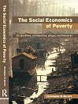
This project originates from The Pew Charitable Trusts' project on Moral and Social Dimensions of Microeconomic Behavior in Low-Income Communities.
In The Social Economics of Poverty, an eminent team of scholars apply tools of the nascent social economics paradigm to one of the most enduring and frustrating questions in economics: why does poverty persist in a world of abundant resources? Why are some people excluded from growth processes while others are not? Why do some people enjoy access to scarce resources or the efficiency enhancements associated with cooperation while others do not?
Humans do not live in isolation. Observed microeconomic behavior therefore depends on people's identities and on the formal and informal social relations that shape their world. These behaviors subsequently affect individual and group identity and relationships, creating a system with dynamic feedback. Such systems commonly lead to low-level, stable states characteristic of poverty traps. Economists are just beginning to explore the consequences of such phenomena. Individual chapters, written by leading scholars in the field, illustrate how the insights offered by social economics might inform and enhance both the discipline of economics and the design of policies intended to help reduce the incidence and duration of poverty around the world.
Contributors include George Akerlof, Larry Blume, Sam Bowles, Michael Carter, Marco Castillo, Tim Conley, Indraneel Dasgupta, Jean-Yves Duclos, Joan Esteban, Marcel Fafchamps, Hanming Fang, Andrew Foster, Tatiana Goetghebuer, Karla Hoff, Ravi Kanbur, Rachel Kranton, Eliana LaFerrara, Glenn Loury, Jean-Philippe Platteau, Debraj Ray, Arijit Sen and Chris Udry.
Food Aid After Fifty Years: Recasting Its Role (Routledge, 2005)
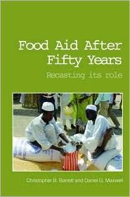
with Daniel G. Maxwell.
Food aid has improved or saved the lives of many hundreds of millions of people worldwide in the half century since U.S. Public Law 480 was passed in 1954.
This book provides the most comprehensive, current and clear explanation of the wide range of issues surrounding food aid, an extraordinaily complex arena of contemporary international policy. In donor countries, food aid is at once an instrument of domestic agricultural policy, development assistance, and foreign and trade policies, managed through both bilateral and multilateral agencies with heavy involvement from the private non-profit sector as well as profit-seeking agribusinesses and maritime interests. In recipient countries, food aid affects agriculture, finance, markets, human health and nutrition, and the general path of economic development. Widespread misunderstanding and myths feed ongoing controversy over food aid and undermine food aid's significant potential as an instrument of humanitarian and development policy.
By integrating the findings and experience of an academic economist and a senior manager and food security advisor with a major international NGO on the role food aid plays, and might prospectively play in the future, this book advances an evidence-based vision for food aid in support of a broader strategy to reduce poverty and food insecurity in low-income, food deficit nations. The authors first present a clear and comprehensive analytical and empirical account of food aid as historically and currently practiced so as to resolve key misunderstandings and explode a few longstanding myths. Food aid has been a flawed instrument over the past half century, to be sure. But with limited substitute resources available globally from donors to support humanitarian operations and development assistance, it has nonetheless played an important role. Moreover, many of food aid's flaws are remediable with concerted action by key donors and operational agencies.
The CGIAR at 31: An Independent Meta-Evaluation of the Consultative Group on International Agricultural Research (The World Bank 2004)
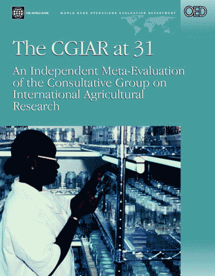
Uma Lele, Christopher B. Barrett, Carl K. Eicher, Bruce Gardner, Christopher Gerrard, Lauren Kelly, William Lesser, Karin Perkins, Saeed Rana, Mandivamba Rukuni and David J. Spielman
Natural Resources Management in African Agriculture: Understanding and Improving Current Practices (CABI Publishing 2002)
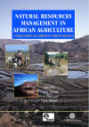
with Frank Place (International Center for Research on Agroforestry), Abdillahi Aboud (Egerton University, Kenya).
Tradeoffs or Synergies? Agricultural Intensification, Economic Development and the Environment in Developing Countries (CABI Publishing, 2000)
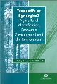
with David Lee on the relationship between agricultural intensification, poverty reduction, economic growth and the environment.